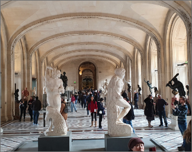

|  | 프랑스 | 레오나르도 다 빈치의 <모나리자>, <밀로의 비너스>, <사모트라케의 니케>가 루브르의 대표작으로 꼽히며, 그 외에도 명작들이 셀 수 없이 많다. 3동으로 나뉘어져 있으며 38만 점 이상의 작품을 한 번씩 보려면 꼬박 일주일이 걸린다. 다만 이것은 정말 꼼꼼히 관람할 때의 이야기고, 중요한 유물 중심으로 돈다면 반나절 혹은 길어봐야 하루 안에 대부분 관람할 수 있다. 고풍스러운 루브르 건물에 둘러싸여 있는 현대적인 유리 피라미드가 유명하다. 1989년 프랑스 혁명 200주년을 기념하여 세워진 유리 피라미드는 처음에는 에펠 탑처럼 강한 찬반양론을 불러일으켰지만 지금은 루브르의 명물로 자리잡았다. | |
|---|---|---|---|
| 유럽여행 | 파리 | 여행추천 | 현재의 루브르는 과거에 왕궁이었던 곳을 개조했다. 1202년에 국왕 필리프 오귀스트가 이곳에 성채를 축조한 데서 비롯되었고 14세기 샤를 5세의 시대부터 왕궁으로 쓰였다. 1527년 프랑수아 1세는 중세의 루브르 성 개조를 계획, 전부를 헐어버리고 르네상스 양식의 새로운 궁전을 세울 것을 결정, 피에르 레스코와 장 구종이 설계를 담당, 레스코가 현재의 살 데 카리아티드(여인 기둥의 방)와 국왕의 2층 거실을 세우고 내외의 조각 장식은 장 구종이 담당했다 |
| 여행시간 | 6시간 | 여행일자 | 2022. 12. 16 |